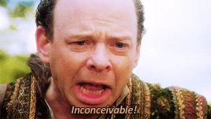

Thank you ParisJS! 50 meetups ! \o/
now pizzas munching?

Can you imagine Node without npm?

"In npm@2.0.0, Ben changed npm run-script to allow you to pass arguments into scripts. That’s a breaking change. It’s as simple as that."
(but that's good, and what semver is for)
npm shrinkwrap is unreliableWhy would it be more important than npm 2?
"npm@3 constitutes a nearly complete rewrite of npm's installer to be easier to maintain, and to bring a bunch of valuable new features and design improvements to you all."
I'd love to say "hell yeah"
But wait just a bit if you depend heavily on shrinkwraps.
(Front-end? Go for it!)
There's a roadmap on npm's Github with short-term and long-term goals/ideas.
npm install -g npm # yes, really.
If you don't, use nvm